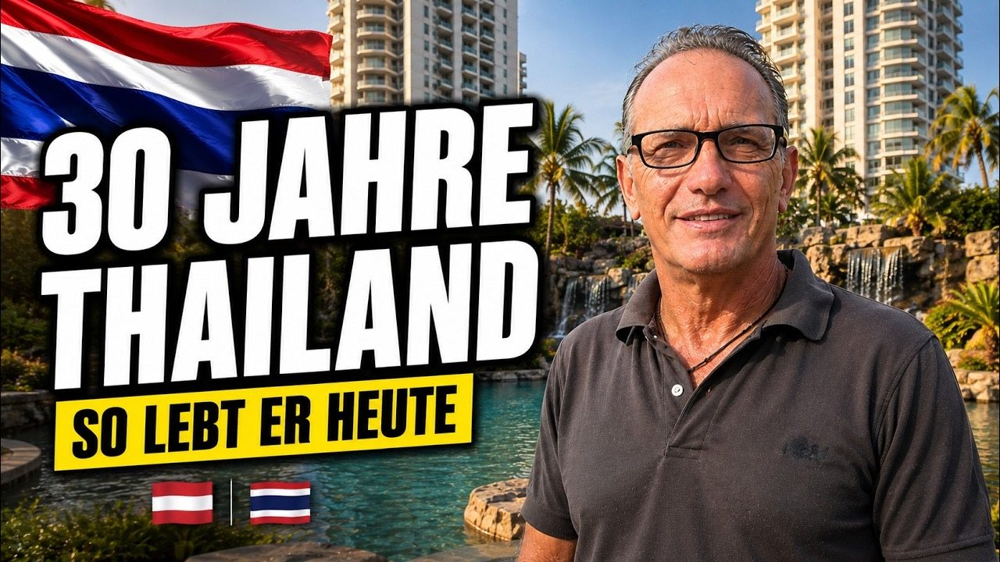

Ich sage es dir so wie es ist: Interviews wie dieses sind der Grund, warum ich diesen Kanal mache. Ralph ist 57, Österreicher, und lebt seit mehr als 30 Jahren in Thailand. Nicht „war vor 30 Jahren mal im Urlaub da". Er kam mit Mitte 20 aus beruflichen Gründen nach Bangkok und ist geblieben. Heute lebt er in Pattaya, in seiner eigenen Wohnung, und wenn er von einem Besuch in Österreich spricht, sagt er einen Satz, der hängen bleibt: „Und dann geht es wieder nach Hause. Zu Hause bin ich hier."
Wir haben uns über eine Stunde Zeit genommen. Über Sprache, Ehe, Geld, Visum, Versicherung und die Frage, ob er heute noch einmal denselben Weg gehen würde. Seine Antwort kam ohne Zögern: „Genauso wieder."
Vier Ausländer in 30 Jahren
Schau mal, das war für mich die überraschendste Zahl des ganzen Gesprächs. Ralph spricht, liest und schreibt Thai. Er lernt seit 30 Jahren beim selben Lehrer, einem Thailänder, der 15 Jahre in Deutschland gelebt hat. 300 Baht die Stunde, ungefähr 8 Euro, seit drei Jahrzehnten unverändert. Und in all diesen Jahren hat Ralph genau vier Ausländer kennengelernt, die Thai sprechen. Vier.
Sein Lehrer hat ihm mal gesagt: Wer nach Jahren im Land noch keinen thailändischen Spitznamen trägt, lebt in seiner eigenen Blase und hat sich nicht integriert. Ralph hat seinen Spitznamen. Die Thailänder in seinem Umfeld nennen ihn mit dem Zusatz „Lung", älterer Onkel, ein Zeichen von Respekt. Er selbst sagt: „Ich bin vom Pass her Österreicher, aber ich fühle mich mehr als Thailänder."
„Man bringt zwar den Deutschen im Flugzeug aus Deutschland heraus. Aber der Deutsche muss auch zu Hause bleiben. Es muss ein leeres Blatt hier ankommen."
Das ist Ralphs Kernbotschaft, und sie zieht sich durch das ganze Interview: Wer auswandert und sein altes Leben nur mit Sonne dekorieren will, scheitert. Wer als leeres Blatt ankommt, mit Respekt und echtem Interesse, hat eine Chance.
Was das Leben wirklich kostet: seine ehrliche Zahl
Am Ende des Tages will jeder, der über Thailand nachdenkt, eine Zahl. Ralph nennt sie: 1.500 Euro im Monat, die realistische Spanne liegt für ihn zwischen 1.000 und 2.000. Mit 2.000 ist es schöner, sagt er, aber es würde auch mit 1.000 gehen. Eine Angestellte im 7-Eleven verdient 12.000 bis 15.000 Baht im Monat, das sind umgerechnet 315 bis 394 Euro, und auch damit funktioniert hier ein Leben.
Diese Einschätzung deckt sich mit dem, was deutschsprachige Quellen aktuell für Pattaya berechnen: Wer bescheiden lebt, kommt mit rund 900 Euro aus, komfortabel wird es zwischen 1.600 und 2.100 Euro. Ralphs 1.500 liegen genau in der Mitte. Und er ist ehrlich genug, den Punkt anzusprechen, den viele verschweigen: Die Grundkosten (Wohnen, Essen, Transport) sind klein. Teuer wird das Vergnügen. Bei vielen, die er kennt, machen die Extras zwei Drittel des Budgets aus. „Ist bei mir auch so", sagt er trocken.
- Monatsbudget: 1.500 € empfohlen, Spanne 1.000 bis 2.000 €
- Thai-Unterricht: 300 ฿ pro Stunde (ca. 8 €), seit 30 Jahren beim selben Lehrer
- Benzin: 42 ฿ pro Liter (ca. 1,10 €), in Deutschland knapp 2 €
- Fahrzeug-Pflichtversicherung: deckt bis 30.000 ฿ Personenschäden
- Seine Empfehlung: private Versicherung mit 2 bis 3 Mio. ฿ Deckung
„Einfacher wird nichts": Konto, Visum und die neue Härte
Ralph hat die goldenen Jahre erlebt. Ein Bankkonto? Früher: Pass vorlegen, fünf Minuten, fertig. Heute beschreibt er die Kontoeröffnung in Pattaya als Spießrutenlauf mit einer Litanei an Dokumenten. Das ist keine gefühlte Wahrheit, das lässt sich belegen: Seit Anfang 2025 verlangen die großen thailändischen Banken für Neukonten ein Langzeit-Visum, Touristenvisa reichen bei Bangkok Bank, KBank und SCB in der Regel nicht mehr. Seit Ende 2025 kommen Pass-Chip-Scan und Gesichtsscan dazu. Hintergrund ist die Anti-Geldwäsche-Kampagne der Bank of Thailand, nachdem Scheinkonten jahrelang für dubiose Geschäfte missbraucht wurden. Genau das meint Ralph, wenn er sagt: Alle baden aus, was einige wenige kaputt gemacht haben.
Dasselbe Bild beim Thema Visum. Ralph nennt sie „U-Boote": Leute, die ihr Visum um Hunderte Tage überzogen haben und früher irgendwo im Isaan anonym untertauchen konnten. Diese Zeit ist vorbei. Durch die Digitalisierung findet die Immigration diese Leute, und die Zahlen geben ihm recht: Allein in den ersten fünf Monaten 2026 wurden über 14.000 Overstayer und illegale Arbeiter festgenommen, fast 170.000 Personen stehen auf der Blacklist. Ralphs Fazit ist hart, aber ehrlich: „Entweder kannst du dir Thailand leisten zum Leben, oder du bist nicht willkommen. Das ist eine knallharte Realität."
Unfall, Versicherung und die thailändische Mentalität
Ein Detail aus dem Gespräch kennen selbst viele Langzeit-Residenten nicht: Die Fahrzeug-Pflichtversicherung, auf Thai „Por Ro Bo", die Plakette am Roller, deckt bereits bis zu 30.000 Baht Personenschäden in jedem Krankenhaus ab. Keine Unsumme, aber immerhin. Für alles darüber empfiehlt Ralph eine private Versicherung mit 2 bis 3 Millionen Baht Deckung, und zwar eine thailändische, die direkt zahlt, ohne Vorkasse-Diskussionen mit einem Versicherer in Deutschland.
Und dann erklärt er etwas, das man in keinem Ratgeber findet: die Kompromiss-Kultur bei Unfällen. In Thailand zahlt am Ende oft der, der zahlen kann, nicht zwingend der, der schuld ist. Ralph erzählt von einem Fall unter zwei Thailändern, bei dem der Wohlhabendere den Schaden übernahm, obwohl der andere aufgefahren war. Wer das als Ungerechtigkeit abspeichert, hat das Land nicht verstanden. Wer es einkalkuliert, lebt entspannter.
Die Rechnung, die erst nach Jahren kommt
Zum Schluss wird das Gespräch nochmal ernst. Ralph erzählt von einem Bekannten, der eines Tages nach Hause kam: Die Frau weg, die Motorräder weg (waren auf ihren Namen angemeldet), der Safe leer. Dazu ein Brief: Das steht mir zu, nach all den Jahren. Ralphs Punkt dabei ist nicht das Drama, sondern die Analyse: „Es ist nicht plötzlich passiert. Es ist in vielen Jahren, Stufe für Stufe passiert. Und du hast es nicht gecheckt."
Wer die thailändische Kultur nicht lesen lernt, das Lächeln nicht deuten kann, die Zeichen von Nichtachtung nicht bemerkt, der zahlt am Ende. Nicht sofort. Aber irgendwann. Genau deshalb kommt Ralph immer wieder auf denselben Anfang zurück: Sprache lernen, Respekt zeigen, sich bewusst sein, dass wir hier Gäste sind.
Das komplette Interview mit allen Geschichten, die hier keinen Platz hatten (die Lauda-Air-Story, seine Ehe, der Sarkasmus auf Thai), findest du auf meinem YouTube-Kanal. Und wie Ralph wohnt, zeigt dir die große Tour durch seine Anlage in Pattaya, ebenfalls auf dem Kanal.
Die Videos dazu

Du überlegst, nach Thailand auszuwandern?
Ich beantworte deine konkreten Fragen zu Kosten, Visum, Wohnort und Alltag in einem Beratungsgespräch. Direkt, ehrlich, ohne Schönfärberei.
Beratungsgespräch buchen →Interview mit Ralph, Pattaya, Mai 2026 (61 Min.). Zusatzrecherche, jeweils mehrfach geprüft: Bank-Regeln für Ausländer 2025/2026: MBMG Group, Issa Compass, Zagdim (übereinstimmend). Overstay-Durchsetzung 2026: Chiang Rai Times, ThaiEmbassy.com (übereinstimmend). Lebenshaltungskosten Pattaya 2026: Wochenblitz, Sawadee-Thailand, Thaifreu (übereinstimmend). Wechselkurs: 1 € = ca. 38 ฿.